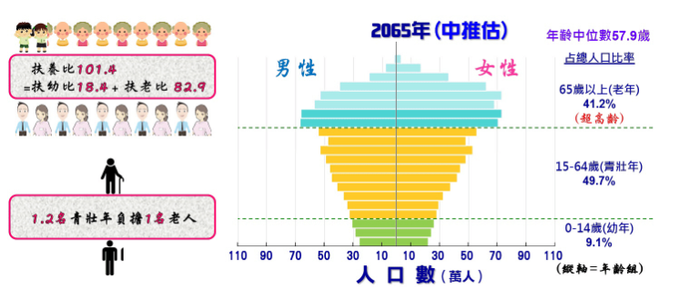
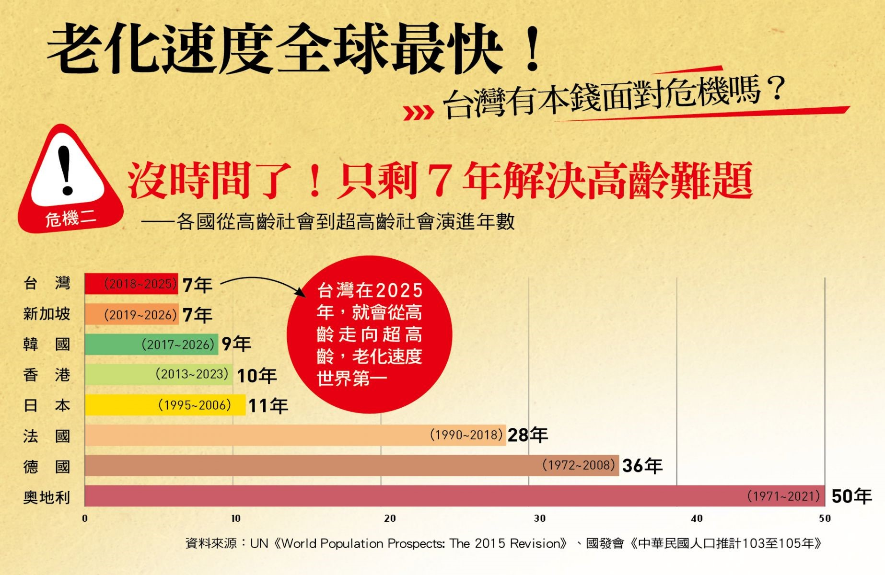
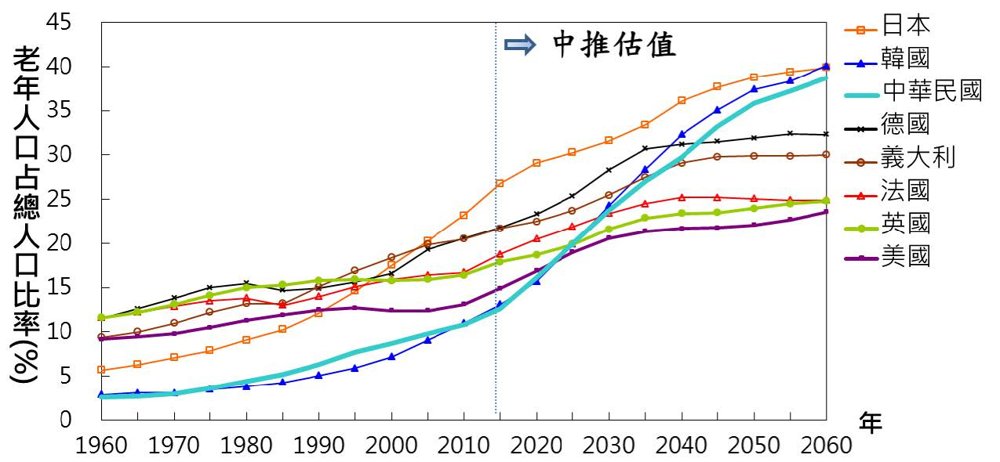
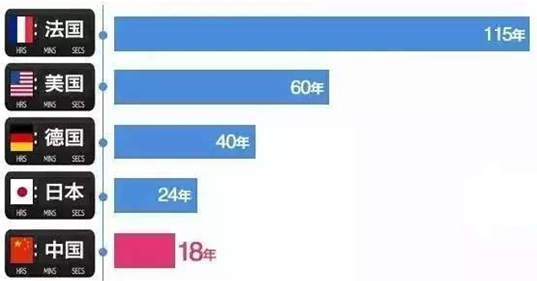
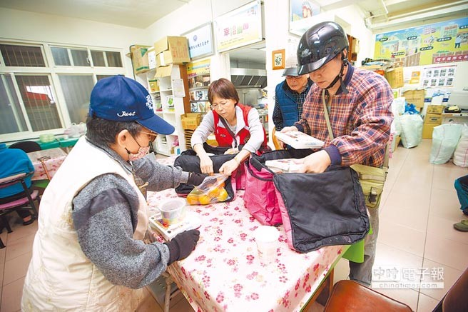
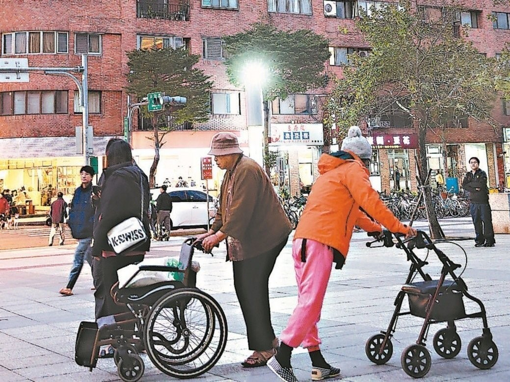
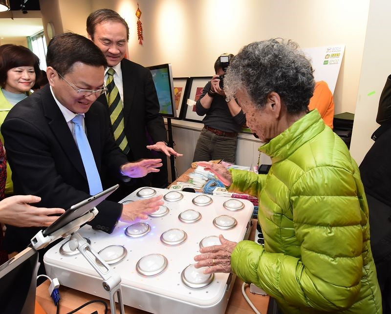
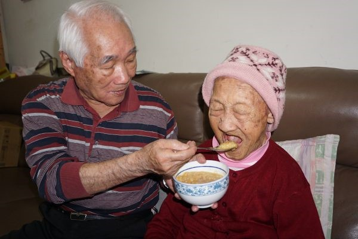
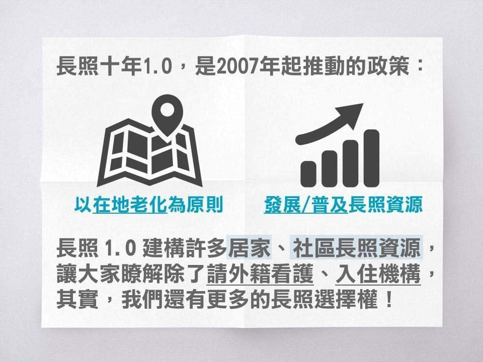

全球人口正步入老齡化階段。世界上幾乎每個國家的老齡人口數量和比例正在增加。人口老齡化有可能成為21世紀最重要的社會趨勢之一，幾乎所有社會領域都受其影響，包括勞動力和金融市場、對住房、交通和社會保障等商品和服務的需求、家庭結構和代際關係。
《世界人口展望：2017年修訂版》的數據顯示，到2050年，60歲及以上人口數量將增長兩倍多，到2100年將增長三倍以上，由2017年的9.62億上升至2050年的21億和2100年的31億。全球60歲及以上人口增長速度超過年輕群體。
全球60歲及以上人口增長速度超過年輕群體。
2017年，全球60歲以上人口約9.62億，佔全球人口13%，且每年以3%左右的速度增長。目前，歐洲60歲及以上的人口所佔比例最大（佔25%）。快速老齡化的問題在世界其他地區同樣存在。到2050年，全球除非洲以外所有地區60歲及以上人口將接近甚至超出三分之一。全球老齡人口數量在2030年將達14億，2050年達21億，2100年上升至31億。
到2050年，全球80歲及以上人口數量預計增長三倍，即從2017年的1.37億增長至2050年的4.25億。到2100年，將增長至9.09億，是2017年的近7倍。

台灣65歲以上老年人口占總人口比率在今（107）年3月底達到14.05％，也就是說，7個人中就有1個是老人，臺灣正式宣告邁入「高齡社會」，如何維護高齡人口的生活品質與尊嚴，以及因應老化社會帶來的青壯年照顧及扶養負擔加重和少子化現象，是政府持續努力的重要目標。

人口為國家構成的基本要素之一，人口數量及年齡結構的變化為決定國家發展的重要關鍵。為了解未來人口發展趨勢，以做為政府相關機關在擬定人口、教育、勞動力、產業發展、都市住宅、社會服務及醫療服務等相關政策之規劃依據，本會每2年根據最新人口、出生、死亡及遷徙等相關統計資料，修正未來人口推估值。
人口數量與年齡結構之變遷，在長期方能顯現。當前我國所面臨之人口高齡少子化趨勢，即反映過 去長久以來整體經社環境演變下，國人在婚育、死亡、遷徙等方面改變之結果；而下一世代之人口數量及其年齡結構，亦取決於這一世代出生、死亡及遷徙人數。人口問題改善非一蹴可及，為觀測本世代之生育水準對下一世代人口由幼年至老年時期之年齡結構變化，以及早思考、因應我國未來所需面對的人口重要議題，本報告推估未來約50年左右之人口數，推估期間為2018年至2065年。

台灣在二○一八年，就會進入「高齡社會」，二○二五年，進入「超高齡社會」。在這個最關鍵的老化階段，我們只有七年的時間，速度堪稱世界第一！也就是說，剩下不到十年的時間，我們就會進入超高齡社會。和其他國家比起來，我們就像一夜白髮，手足無措。

我國65歲以上老年人口占總人口比率在今（107）年3月底達到14.05％，也就是說，7個人中就有1個是老人，臺灣正式宣告邁入「高齡社會」，如何維護高齡人口的生活品質與尊嚴，以及因應老化社會帶來的青壯年照顧及扶養負擔加重和少子化現象，是政府持續努力的重要目標。
內政部表示，根據世界衛生組織定義，65歲以上老年人口占總人口比率達到7％時稱為「高齡化社會」，達到14％是「高齡社會」，若達20％則稱為「超高齡社會」，我國老年人口比率在82年便超過7％，進入高齡化社會，而後受到戰後嬰兒潮世代陸續成為65歲以上老年人口影響，我國老年人口自100年起加速成長，並於去(106)年2月首度超過幼年人口（老化指數達100.18），直至今年3月，我國65歲以上老年人口占總人口比率達14.05％，正式邁入高齡社會。

就中國的人口現狀、存在的問題及可能的政策應對，《中國新聞周刊》近日專訪了中國社會科學院人口與勞動經濟研究所所長、中國人口學會副會長張車偉。“中國的生育率下降太快”中國新聞周刊：目前，中國的老齡化程度處於什麼水平？從全國整體來看，呈現出怎樣的特點？
張車偉：據聯合國定義，當一個國家或地區65歲及以上老年人口數量佔總人口比例超過7％時，就意味著這個國家或地區進入老齡化社會。2017年，中國人口中65周歲及以上人口15831萬人，佔總人口的11.4％。60周歲及以上人口24090萬人，佔總人口的17.3％。
中國的老齡化程度現在還不算特別嚴重，但是老齡化的速度卻是全世界最快的。發達國家老齡化進程一般長達幾十年，甚至100多年。例如，法國用了115年，瑞士用了85年，英國用了80年，美國用了60年，而中國祇用了18年。並且據聯合國預測，1990年至2020年世界老齡人口平均年增速度僅為2.5％，而同期我國老齡人口的遞增速度為3.3％。並且一直在加速，越來越快。
就中國的人口現狀、存在的問題及可能的政策應對，《中國新聞周刊》近日專訪了中國社會科學院人口與勞動經濟研究所所長、中國人口學會副會長張車偉。“中國的生育率下降太快”中國新聞周刊：目前，中國的老齡化程度處於什麼水平？從全國整體來看，呈現出怎樣的特點？
張車偉：據聯合國定義，當一個國家或地區65歲及以上老年人口數量佔總人口比例超過7％時，就意味著這個國家或地區進入老齡化社會。2017年，中國人口中65周歲及以上人口15831萬人，佔總人口的11.4％。60周歲及以上人口24090萬人，佔總人口的17.3％。
中國的老齡化程度現在還不算特別嚴重，但是老齡化的速度卻是全世界最快的。發達國家老齡化進程一般長達幾十年，甚至100多年。例如，法國用了115年，瑞士用了85年，英國用了80年，美國用了60年，而中國祇用了18年。並且據聯合國預測，1990年至2020年世界老齡人口平均年增速度僅為2.5％，而同期我國老齡人口的遞增速度為3.3％。並且一直在加速，越來越快。

根據聯合國統計，全球人口已突破75億，其中老人人口（60歲以上）就有近10億，約占總人口的12.8%，不過，大陸的老年人口問題更嚴重，不僅人數已高達2.4億，占總人口比重17.3%，占全球老年人人口的25%，等同全球有1/4的老年人口集中在中國大陸，估計到2035年，將會突破4億大關，占總人口近3成比重，顯見老年人口問題將成為大陸當局未來亟須解決的嚴肅課題。
大陸不僅要面對出生率日趨下滑的走勢，更要面臨日益嚴重的老年問題，而這個問題不單是中國大陸要頭疼，全球都要傷腦筋。據聯合國公布最新數據顯示，截止到2018年7月11日，全球人口數量介於75億至76億，其中，老年人口計約有9.62億，占全球總人口的比重約為12.8%。預估到2050年全球人口數量將達到98億，其中老年高達31億。

5月24日，山東省政府新聞辦舉行新聞發布會，介紹山東省老年人口信息和老齡事業發展情況。黨報君從會上獲悉，2017年，山東省60歲及以上老年人口達到2137.3萬人，佔總人口的21.4%，高出全國平均水平4個百分點﹔65歲及以上老年人口達1399.8萬人，佔總人口的14%，高出全國平均水平2.6個百分點。在老年撫養比（老齡人口和勞動人口的比例）方面，全省65歲及以上老年撫養比為20.3%，比2010年第六次人口普查時提高了7個百分點。與全國平均水平相比，山東省人口老齡化形勢更加嚴峻，社會養老負擔偏重。
據悉，山東省17個設區市中有12個市的老年人口比例超過20%，已進入中度老齡化社會。老齡化程度最嚴重的是威海市，老年人口比例達27.8%﹔其次為煙台市的27%﹔第三是日照市的23.3%。老齡化程度最低的是聊城市，老年人口比例為18.4%。
內容學者認為國內長照服務發展20多年，但對於長照想做到什麼程度仍無目標。沈君帆、侯世駿攝
馬政府時代曾規劃長照保險制度，透過類似健保模式來執行長照政策。蔡政府上任後推長照2.0則採稅收制，但長照主要財源的菸稅、遺贈稅收入不穩定，去年稅收115億元，
還不到原先預估值296億元的一半。衛福部表示，現階段國內長照量能仍不足，談是否回到長照保險制仍言之過早。行政院政務委員林萬億表示，推動稅制挹注長照財源方向不
變，菸稅、遺產稅、房地合一稅等指定稅收，今年1月挹注長照經費為28.33億元，以此推算，有達到長照一年300多億元經費目標，因此目前財務狀況並無問題。林萬億說，荷
蘭、日本、德國等少數國家使用保險制，易走向機構化、醫療化，進而衍生一條龍的商業導向經營模式等，與在地老化、社區化的政策目標背道而馳。衛福部次長薛瑞元說，
保險制須全民強制納保，對使用需求期待也相對提高，現階段國內長照量能仍不足，談長照保險制仍言之過早。成功大學老年研究所教授李世代認為，國內長照服務發展20多
年，但對於長照想做到什麼程度的服務、花多少錢，都沒有目標，建議政府應詳盡調查長照需求量，才能讓錢花在刀口上。

新北市今年推動六日獨居老人送餐，造福更多獨居長者，圖為獨居長者送餐場景。（本報資料照片）
新北市獨居老人送餐服務行之有年，過去供餐以周一到周五，今年擴大到六日也可以供餐，預計將增列2000萬經費，預計全市3500名獨老都可受惠，落實老人福利政策。
新北市社會局針對滿65歲以上的低收且獨居的老人，結合民間單位和公所開辦送餐到府服務，以往供餐狀況因地而異，一周5至6天，每天1到2餐，為了提供長者更好的照護，
2018年起新北市將餐數和天數拉長，長者天天都能吃到溫熱便當。新北市社會局老人福利科長鄭淑敏表示，獨老送餐服務目前委託各區公所及18家居服單位辦理，今年起周六
日將透過送餐或是代餐方式，讓長者可以在家自行加熱用餐，因應新政策上路，也增列2千萬經費，讓獨老們享有更好的照護。鄭淑敏進一步指出，補助對象以65歲以上、設
籍新北市的低收及中低收的獨居失能老人為主，經由訪視評估後列冊關懷。另外，社會局也推出「愛心換燈泡」、「檢查老舊線路」等服務，期盼藉此提升銀髮族住宅安全。
長期承攬送餐業務的樹林區東陽里長林耿邦表示，送餐幾乎是全年無休，雖然是以做公益為出發點，但送餐志工也需要休息，期盼有相關配套措施，別讓社福美意打折。外界
常以為送餐利潤高，但近年菜價漲，加上人數不多成本難壓低，多仰賴善心人士贊助，希望未來能「微調」經費，至少不用賠錢做愛心。

北台灣銀髮族出現移居潮，移入地點以桃園市最熱，新北市居次。 聯合報系資料照官方統計數據顯示，北台灣銀髮族出現移居潮，移入地點以桃園市最熱，新北市居次。
內政部根據戶政和衛福部資料，每季統計65歲以上老人人口與家戶數變動，至去年第三季，全台老人已達321萬人，其中，家裡成員都在65歲以上的老人戶，較前一年增加8.7%
，達48.7萬戶，已逼近50萬戶。觀察各縣市老人戶增加情況，桃園市老人戶增加速度最快，去年第三季年增幅12%，已連續12季年增幅位居全台之冠，且均在兩位數以上，最高
達15%， 目前桃園全市老人戶已達3.3萬戶。新北市老人戶年增幅緊追在後，排名全台第二，也已連續4季年增幅在兩位數以上，目前全市共有8.8萬老人戶，全台最多。
北台灣台北市、基隆、宜蘭、新竹、苗栗等，老人戶雖也持續增加，但增幅都低於平均值，其中又以基隆年增幅最少。台灣房屋智庫發言人張旭嵐表示，數據顯示，北台灣不
僅青壯年考量房價、工作，出現移民風，銀髮族也有明顯移居現象；房價高低、居住品質，生活成本，醫療資源、福利政策以氣候環境，則決定了銀髮族落腳的地點。以最受
銀髮族青睞的桃園來說，目前平均房價一坪16萬元上下，不少台北市，或新北市一級房市區銀髮族把公寓賣掉，移居桃園買電梯宅，不僅換得更舒適的生活空間，手上還可多
出一筆錢養老。張旭嵐表示，前兩年台北市砍掉老人津貼的同時，桃園市對長者的三節、重陽節敬老金，提高到每年可領取9500元，為六都之最，優渥的福利政策，加上高鐵
和機捷通車後交通便利，子女探親容易，研判也吸引不少老夫老妻移居桃園。張旭嵐分析，新北老人戶年增率僅次於桃園，房價亦是重要因素。市況顯示，近年許多台北市銀
髮族賣掉北市住宅， 移居三峽北大、林口新市鎮，三重重陽等生活機能成熟，但房價相對便宜的重畫區。張旭嵐說，台北市老人戶年增率低，除了不少銀髮族移居外地因素外
，北市房價高，子女買房門檻高，不少人成年後還是會選擇靠爸靠媽一起居住，可能也是主因之一。

長照2.0上路超過1年，陸續有新制度、創新服務上路，也有制度「邊做邊改」，衛福部長陳時中樂觀表示「今年會是長照起飛年」。但包括財源不穩、人力不足的聲卻始終未消失，今年元旦上路
、衛福部稱能提高照服員薪資的「新新制」支付制度，更遭第一線服務機構重批「倉促上路」，衛福部勢必要更加把勁，長照才能順利起飛。而目前1966長照服務專線即日起正式開通，民眾想了解
申請長照的大小事，可撥打「1966」解惑。賴揆在去年1966長照專線開通記者會上，因「功德說」引發討論，也讓衛福部趕緊喊出替照服員加薪緩頰，並於今年元旦推出「新新制」支付制度，讓長照服務從過去的計時制，改為以各項服務作基準的計次制。
「新新制」元旦上路，各地衛生局、長照機構只有不到1周時間準備，遭外界質疑是為盡快淡化賴清德的「功德說」效應。
新制為照服員加薪反應不一，第一線服務機構指出，因服務型態改變，有個案認為變貴，進而減少服務量，「當機構收不到給付，何來加薪一說」？衛福部畫出月薪3萬多的大餅，屆時若真的給不出這薪水，照服員要怪機 構還是衛福部？
薪水不高、工作有職業傷害疑慮、社會地位仍待提升，使得現僅9000多名照服員投入長照，人力缺口估1萬人，但長照2.0上路至今，政府拋的甜頭「不甜」，對於畢業的大學生，若和其他工作的薪資差異不大，難吸引人力投入。
為求在地老化，長照2.0推出ABC「社區整體照顧模式」，也無法涵蓋民眾需求。牛湄湄律師與其先生兩人，分別收掉律師事務所及診所；蔡銀純辛苦照護師大副教授劉海波，就是因長照2.0對失智、失能重症長輩的關照，缺了很大一塊，經費不足自是主因。
長照2.0以稅收制作為財源，並於去年納入「菸稅」和「遺贈稅」，儘管去年整個下半年只收53億元，衛福部仍對今年「全年可收296億元」抱持樂觀，姑且不論能否收足，光是遺贈稅屬於機會稅、菸稅是為了抑制吸菸人口這2點，就讓外界難以釋疑，一旦稅收制財源將無法滿足需求，是否最終要走上保險制一途？
衛福部更喊出2020年要布建完2500個「預防及延緩失能照護據點」，兩者均和負責「健康促進」的衛福部國健署角色重疊，如何讓三者分工更明確、資源不重複使用，是衛福部大課題。

全國首座結合圖書館的長照服務機構「連瑪玉學苑日間照顧中心」26日在彰化縣大村鄉啟用，整合醫療與社區服務，提供完善連續性長期照護服務，更能照顧社區民眾在地安老，共同營造長照友善城市。
彰化縣長魏明谷表示，全臺灣失智的人口約24萬人，而彰化縣有將近1萬3,000位失智人口，這些在輕度及中度失智階段的老人，雖然四肢健全，但出門後卻不知如何回家，或是煮東西瓦斯忘了關，所以需要24小時去照顧他們，這也是長照投入人力最多、最困難的失智症照顧中心，感謝彰化基督教醫院和切膚之愛基金會成立失智日照中心。
他也與大家分享長壽的秘訣，第一、早睡早起多運動，第二、多食用蔬菜，第三、做志工，過團體的生活，延緩老化失能失智，此外，縣府實施萬人健檢，他也呼籲大家要有健康意識，並且活得健康、快樂、長壽。
切膚之愛基金會董事長陳穆寬表示，彰化縣65歲以上的人口已經達到18萬人，步入了高齡化社會，這次結合大村鄉圖書館，配合政府長照2.0政策，讓失智、失能或是年紀大的長者，獲得最好的照顧，不只是國家的責任，也是一個優良教會的責任。
切膚之愛基金會執行長詹麗珠指出，「連瑪玉學苑」結合圖書館，打造成北歐鄉村的風格，同時提供小規模多機能的服務，有四床可夜宿喘息，是一個無障礙的空間，有視聽室、互動廚房、泡腳池等，還有專業人員幫助長輩做健康促進的服務，目前已有多位長者入住，歡迎大家來預約。
配合國家的長照計畫，推動「一鄉鎮一日照中心」。連瑪玉學苑位於大村鄉圖書館2樓，打造五星級環境，以歐式田野鄉村風情，延伸家的溫馨感受，失智長輩可以獲得溫馨專業服務外，大村鄉正新輪胎營養部每天提供熱騰騰的老人營養膳食，讓優美的環境更加添無限愛的溫暖關懷，連瑪玉學苑為失智家庭提供日間照顧、居家服務、夜間住宿及其他整合性長照服務，是彰化縣首家以失智者提供小規模多機能多元服務。

【大紀元2018年03月18日訊】（大紀元記者李怡欣台灣高雄報導）「老老照顧」台灣未來趨勢是，世代恐面臨老人照顧更老的長輩、一樣老化的手足或另一半，對此，專家呼籲，要有心理準備，提早因應，延緩失能到來的時間，在社會層面，建構高齡友善環境，讓銀髮族能成功健康、活躍老化。
85歲老人照顧105歲人瑞 專家：雙老照顧已是未來常態
1913年出生的百歲人瑞李張肉老太太，無法獨立照料自己，由大兒子李再興接到高雄家中照顧，18年下來，母子皆長壽健康，但兒子漸漸老邁，81歲老兒子，還要照顧105歲的老老母親，實在力不從心。
老太太的3個兒子平均年齡高達75歲，兒子們出於孝心，捨不得把老媽媽送安養院，李奶奶只好在3個兒子家輪流住4個月。晚上，三兒子阿雄睡客廳照顧媽媽，白天，老母親由老婆阿珠照料。阿珠中風身體差，照顧勞累生怨，便口出惡言「活這麼老幹嘛？」夫妻倆因此爆發口角；加上，不懂老人毛病，老媽媽開始便祕、咳嗽、肚子痛，讓照顧者情緒壓力火上添油。後來，擅長網路與找資料的孫女，撥打一通1966長照專線後，一切開始改變。
避免憾事 伸手求援 「長照1966專線」
熱心的孫女看過高雄市政府官網曾介紹1966，雖然不清楚阿嬤情況，「打看看，再說！」爾後，社會局長照專員果然到宅訪視並發現，「照顧者壓力來自 缺乏照顧替代人力、對社會福利資源不了解、經濟壓力，以及照顧者自身體況不佳，又缺乏照顧知識及技巧，導致情緒負荷，也讓照顧品質低弱」。
社工訪視後，社會局啟動長照計畫，幫李奶奶申請了居家服務、喘息服務以及復康巴士，媳婦阿珠終於可放下心頭大石，同時，她也跟照服員學習到很多洗澡、通便、攙扶等技巧，不再口出惡言，久違的笑容也回來了。
面對雙老未來 你可以即早應戰
雙老議題是必然現象，不須過度驚慌！高雄醫學大學醫學社會與社會工作系副教授陳政智表示，老化會從衰弱、亞失能到失能期三階段，要如何即早面對？針對健康長輩，達到「成功、健康、活躍老化」。
高雄市社會局老人福利科科長于桂蘭表示，長照2.0照顧計畫，打破「年齡限制」，放寬到49歲以下，只要領有身障手冊，經衛生局長照中心評估失能，就能啟動相關長照服務進入家庭中，全國適用對象預計從51.1萬人擴大至73.8萬人，服務項目也從8項增到17項。
另外，針對健康長輩，政府也挹注資源在幫助延緩失能，「越晚掉進長照2.0的籃子裡，對整個資源系統與社會最有幫助」政府鼓勵國人，邁入高齡、老化前期，維持社會參與，加上積極醫療與保健手段，把衰弱期拉長甚或改善，延緩失能的到來。
趁你沒衰弱前 趕快要做的事
避免措手不及就掉入失能的籃子裡。陳政智建議，現在起，要養成蒐集政府資源、日托、照顧者支持團體等「老」資訊；再來，建立「未雨綢繆」防護傘，對人生終點難以啟齒的財產與臨終議題勇敢討論。
雙老的未來，老人需照顧一起變老失能的另一半。「老伴，我雖然不能走，還是可以像年輕時，騎著車載妳兜風」。（李怡欣／大紀元）
還有，老人家要建立「生活圈概念」，像是「平常上哪買菜、社區診所看病、去哪領錢等，逼自己每天外出與人互動，善用老人優待交通工具與免費場所 （如：長青中心、老人活動中心等），千萬不要跟外界疏離，這是最大關鍵。趁還沒衰弱時，趕快提早啟動上述行動與預防，是面對雙重老化應有的概念。
勿悲觀 健康老人還是居多
其實，失能到完全依賴他人的比例沒有想像中高。陳政智說，65歲以上人口失能比例約占10%，其中，生活完全依賴他人僅占2~3%；也就是 說，100個老人中，不到3人重殘，另外97人可自立生活，因此，民眾不要自己嚇自己，或許老了有慢性病，但只要控制疾病、兩老有對外支撐系統，「面臨雙老未來沒有那麼慘」，老了活得積極快樂、有事做，才是重點。
失智症長者無法清楚表達自己身體狀況時，如有身體不適或是昏睡、食慾不振等狀況，照護者會帶長者就醫，如果根據新症狀去看新的醫師，沒提供醫師藥物清單，很容易出現因藥物使用後出現的「串連性投藥」。
高齡患者症候群及多重用藥
老化是隨著年齡增長，無可避免的正常過程，退化則是異常狀況，兩者對健康都有影響，是在程度上的差異，當老化已經影響到個人獨立執行日常生活的能力時，即為退化，失智症即是如此。此外，長者或家人是否能適度介入，減緩老化、退化的速度，及所帶來對健康與生活的影響。在老年醫學中會以「周全性老年評估」（CGA），來對高齡者進行整體身、心、環境等評估，早期提出整合性照護計畫，以避免容易影響長者健康的多重共病、多重用藥、肌少症、衰弱、跌倒等情形，減緩老化、退化或遠離失能。
失智症不是正常老化，失智症長者無可避免要面對退化，但減緩退化退化速度若能減緩，失能的程度也能隨之減緩，這之間關鍵是「照護」，包括：生活照護及醫療照護，所以我們在失智症照護也需要認識老年醫學，經由老年醫學來提升照護品質，減緩退化。
高齡者在照護上會出現許多值得注意的特性，包括：不典型疾病症狀表現、多重共病、多重用藥、身心功能退化與失能、生理功能儲備不足、疾病恢復期較長、需要特別照護方式等，我們一般會以「高齡症候群」來觀察。
「高齡症候群」是指高齡者會出現某些難以符合個別疾病診斷的臨床表徵，是高齡者常見且會深遠影響健康上的議題，在英國稱為「高齡重大議題」（Geriatric giant incontinence），包括：無法行動（Immobility）、行動不穩（Instability）、認知障礙（Intellectual impairment），以及醫源性傷害（Iatrogenic），特別是多重用藥。
多重用藥與多重共病（Co-morbidity, multi-morbidity）息息相關，多重共病是指罹患兩種或兩種以上慢性病的人。根據衛福部國民健康署的統計，台灣六十五歲以上民眾約有三分之一罹患多重共病，慢性病盛行率為七四%，超過三種慢性病高齡者不在少數。
根據美國的研究顯示，隨著年齡的增加與失能的比例增加，老年患者有多重共病的死亡率高於無多重共病的老年患者，失能的老年患者死亡率高於無失能的老年患者。如果將兩者合而為一來看，有多重共病且失能的老年患者死亡率高於其他老年患者，所以醫學界認為預防失能在老年醫學領域中，比疾病治療還重要。
國際上文獻上也發現，八十五歲以上的長者，僅不到五%的人沒有任何慢性病。失智症已是一種慢性病，失智症長者如果還有高血壓、高血脂、糖尿病等各種會影響健康的疾病，很容易是屬於多重共病的長者，增加照護上困難度。傳統上醫療機構以器官專科的醫療模式會遭遇很大的困難，一病一醫的片斷醫療模式增加長者就醫及家屬照護的困擾，而不同專科醫師之間對於長者診治角度的差異更會使家屬照護上無所適從，長者常成為醫療人球，單科醫師無法解決時，更需要整合性醫療服務及照護。
根據二○一○年健保資料分析，台灣的長者平均一年看診約近二六．七次，三七．二%開立一種以上慢性用藥，平均使用四．五九種慢性用藥。其中使用五種以上多重用藥比例為四一．五九%，甚至八．三九%是使用十種以上慢性用藥，這些多重用藥現象容易發生「潛在不當用藥」。
「潛在不當用藥」（Potentially inappropriate medication），是指藥物的處方符合病患的病情，然而藥物服用時副作用的風險高於治療的益處。這種情形在青壯年較少發生，但長者發生藥物不良反應的機會較高，且容易出現明顯的健康風險。所以當面臨急性病症或慢性病急性發作時，高齡患者的臨床表現常是不典型且不具任何特異性。
從多重用藥的研究來看，每位長者平均每天服用四種藥物與六．四顆藥。吃兩種藥物產生副作用的機會是6%，吃五種藥物產生副作用的機會是50％，吃八種藥物產生副作用的機會是100%。
長者雖因多重共病進而產生多重用藥，開立處方的醫師若能進一步協助長者檢視藥物，也擁有影響長者健康的因素與藥物代謝特性等相關知識，才能為長者選擇有效又安全的藥物，同樣狀況也適用於手術或其他侵入性醫療行為。
建議家屬及照護者可先建立長者的藥物清單，將長者目前所服用藥物詳細列出，選擇一位對老年醫學有涉獵的醫師或藥劑師，請他協助檢視這藥物清單，就藥物類型、劑量、藥物間交互作用的風險（Drug-Drug Interactions）、藥物不良反應的風險（Adverse Drug Events, ADEs）等進行瞭解。
此外，由於老化及退化導致的影響，會對長者在藥物動力學（pharmacokinetics）與藥物效力學（pharmacodynamics）上有相當大的改變。藥物動力學是研究藥物服用後，在患者體內的吸收、分布、代謝、排泄情形，藥物效力學是指藥物對身體的影響評估（效果、副作用等），這都必須仰賴醫師及藥劑師來評估。
醫師在開立處方時，能夠注意藥物的適應症、給予患者及家屬足夠的教育、定期檢查所有用藥、即時停用不需要的藥物、在藥物治療前先嘗試非藥物的治療、儘可能降低藥物劑量、給予患長適當追蹤、儘量避免使用某些危險性較高的藥物。家屬、照護者也需有此方面用藥常識，以配合醫囑來執行用藥方式。
為何照護者對用藥方式及藥物清單等相關常識如此重要？失智症長者無法清楚表達自己身體狀況時，如有身體不適或是昏睡、食慾不振等狀況，照護者會帶長者就醫，如果根據新症狀去看新的醫師，沒提供醫師藥物清單，很容易出現因藥物使用後出現的「串連性投藥」（Prescribing cascade）。
這是指長者吃藥出現副作用後，沒有即時發現、或停藥、換藥，誤以為「藥物副作用」是新症狀，再根據新症狀看新的醫師。醫師並不瞭解原本所服用藥物情況，就新症狀開立另一種藥來治療，新加的藥也可能有副作用，甚至跟前面所服用的藥產生交互作用，導致症狀愈來愈多，長者就愈來愈不舒服，甚至衍生出精神行為症狀，家人及照護者更不易照護。
長者因老化，產生不同的生理狀況，失智症長者又因退化，衍生出更複雜的生理與心理因素，如希望有好的照護品質，照護者需要學習的知識更多，但這些知識對自己現在及未來也大有幫助。
摘要重點以多重用藥的研究來看，每位長者平均每天服用四種藥物與六．四顆藥。吃兩種藥物產生副作用的機會是6%，吃五種藥物產生副作用的機會是50％，吃八種藥物產生副作用的機會是100％。
建議家屬及照護者可先建立長者的藥物清單，將長者目前所服用藥物詳細列出，選擇一位對老年醫學有涉獵的醫師或藥劑師，請他協助檢視這藥物清單，就藥物類型、劑量、藥物間交互作用的風險（Drug-Drug Interactions）、藥物不良反應的風險（Adverse Drug Events，簡稱ADEs）等進行瞭解。

在2.0中做出了不少改變，以「找得到、看得到、用得到」為目標，將服務對象擴大、服務項目增加、請服務提供單位掛牌，並將補助的核銷規定鬆綁，希望可以讓更多人受惠、減少民眾的負擔。
從2007年開辦的長照1.0計畫已經邁入尾聲，而今年底將開始進行新的長照2.0計畫，不只延續了1.0的在地老化原則與服務內容，還提供了更多元化的服務。
但是別說長照2.0了，你是不是連長照1.0的內容也不清楚呢？
先來認識長照1.0
長照1.0以在地老化為原則，建構了許多居家服務、社區服務的據點與資源，希望提供大家除了外籍看護與機構以外的照顧選擇，以減少人力與經濟負擔、善用社會資源。此外，政府也提供了經費補助，讓更多需要的人得以申請，並且使用服務。
1.0提供的服務共有八種，分別為：
1. 照顧服務
2. 居家護理
3. 復健服務
4. 喘息服務
5. 交通接送
6. 輔具服務
7. 營養餐飲
8. 機構服務
當家人有需要時，只要撥打長照專線，或是向各縣市的長照管理中心聯絡，便會有專人到你的家中做評估，並依照您的需求提供服務。
改版後的2.0
但是由於1.0的預算少、限制多等問題，導致知道並申請服務的民眾並不多。政府為了改善這些問題，在2.0中做出了不少改變，以「找得到、看得到、用得到」為目標，將服務對象擴大、服務項目增加、請服務提供單位掛牌，並將補助的核銷規定鬆綁，
希望可以讓更多人受惠、減少民眾的負擔。
服務對象擴大
● 50歲以上失智症患者
● 55歲以上平地原住民
● 49歲以下身心障礙者
● 65歲以上衰弱者
2.0的年齡大幅下修，讓可以接受服務的人數增加至73.8萬。
服務項目增加
新增的服務項目為：
失智照顧
原住民社區整合
小規模多機能
照顧者服務據點
社區預防照顧
預防/延緩失能
延伸出院準備
居家醫療
服務項目從1.0的8項增加至17項。其中增加了預防疾病、安寧等服務，讓民眾在生病前、生病後都能獲得服務與照顧。
服務提供單位掛牌
提供補助服務的單位將會懸掛統一且顯眼的招牌，讓民眾可以一眼就看到服務單位在哪。
核銷規定鬆綁
在過去，提供補助或是服務的單位雖然多，但是因為表單不一，導致民眾每向不同的單位申請一次，或是每申請一次不一樣的服務，就需要繳交一次格式不一但其實內容大同小異的文件。
為了讓民眾在申請時可以減少繁瑣的程序，政府將統一表單格式與佐證資料的檢核方式，以簡化作業程序。
社區整合模式
另外，政府將全部的服務分成ABC三級，目的是為了整合社區整體的資源與照顧模式，並加強各項服務之間的連結。
A級：社區整合型服務中心
B級：複合型日間服務中心
C級：巷弄長照站
需要長照服務的民眾可以到就近的服務單位尋求協助，無論你需要的是屬於哪一級的服務，都會有專人幫您轉介到適合的服務中心接受服務。 這些服務將在明年開始正式實
施，若有任何問題，都可以向各縣市的長照管理中心，或是撥打長照專線412-8080洽詢。